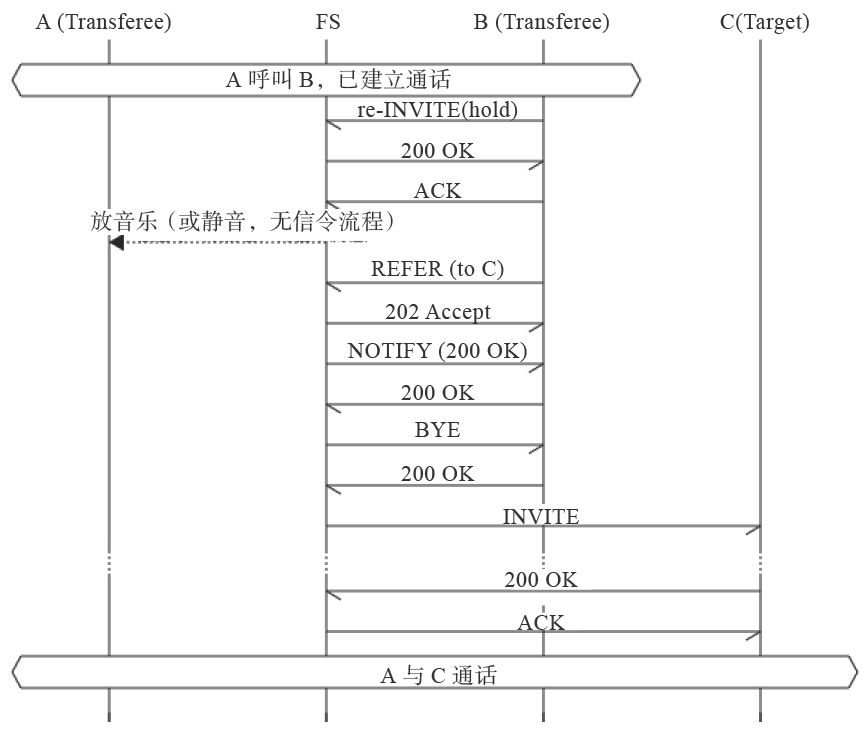

15.1 转接和代接
来电转接和代接是企业PBX中的常用功能。来电转接分为盲转（Blind Transfer）和协商转（Attended Transfer）两种 [1] ，代接实现起来也很简单。下面我们分别加以介绍。
15.1.1 盲转
顾名思义，盲转就是将来电直接转到某一分机。该业务一般用于电话已经接听的情况，举例来说，转接的步骤一般是这样：A呼叫B，B接听，A与B通话，A要求转C，B通过一个操作将来电转接到C，C开始振铃，B挂断，C接听，A与C通话。
FreeSWITCH默认的Dialplan实现了这种转接，方法是B在通话中按“*1”两个键，听到拨号音后，拨叫C的号码，B挂机，A与C通话。
这种转接魔术的根本原因在于下面这一行，在默认的Dialplan中的Local_Extensions中可以找到：
<action application="bind_meta_app" data="1 b s execute_extension::dx XML features"/>
首先，有电话打入后，如果是最终路由到一个内部分机，就会执行到这一行。至此，来话是a-leg，现在还没有b-leg。
bind_meta_app是一个App，它会在本次通话上绑定参数中指定的“1”这个按键，这个可以后续可由“*1”两个键激活。注意，上述代码中，“1”后面的“b”表示这个功能要绑定到b-leg上，虽然b-leg现在还没有。但是到有了以后，b-leg可以按“*1”激活该项功能，而不是a-leg。想想为什么 [2] ？
接着说，“b”后面的“s”表示什么呢？它表示，如果b按键激活该功能后，要在哪条腿上执行这个动作。这里的s表示same，就是说，在哪条腿上接收到按键就在哪条腿上执行。
后面的“execute_extension”表示去Dialplan中找一个extension去执行一下，这里指到XML features（它是一个Context）中去找dx这个extension。在默认的配置中可以在features.xml文件中找到。
总之，这一行执行完毕后只是相当于设了这么一个“套”，指出后面该怎么执行，直到b-leg按“*”才能激活该功能。接下来，Dialplan最终会执行到后面的bridge(user/B)，A与B桥接并开始通话。
通话后，b-leg就有了，它就是用户B所在的那条腿。在通话中，B按下“*1”，就会执行到“dx”，我们到features.xml中去看具体的实现：
<extension name="dx">
<condition field="destination_number" expression="^dx$">
<action application="answer"/>
<action application="read" data="11 11 'tone_stream://%(10000,0,350,440)' digits 5000 #"/>
<action application="execute_extension" data="is_transfer XML features"/>
</condition>
</extension>
这里的answer只是保证电话是应答的状态。后面的read表示等待用户按键，也就是等待用户输入一个分机号（如C的号码）。参数“11 11”是自动收号位数，表示最少接收11位，最大接收11位。如果在收号近程中用户按了“#”（最后一个参数）号，则会立即停止接收（而不管最小和最大收号位数）。tone_stream会产生一个拨号音，以提示B可以拨号了。B拨完号之后，拨号的数据就存到了digits这个通道变量中。电话流程继续往下执行，接着又是execute_extension，它的参数is_transfer是另一个extension，我们可以在同一个文件中继续往下找到，其内容如下：
<extension name="is_transfer">
<condition field="destination_number" expression="^is_transfer$"/>
<condition field="${digits}" expression="^(\d+)$">
<action application="transfer" data="-bleg ${digits} XML default"/>
<anti-action application="eval" data="cancel transfer"/>
</condition>
</extension>
可以看到，到了“is_transfer”以后，通过正则表达式“^(\d+)$”判断收到的数字是不是合法的号码，如果是，则执行transfer App进行转移。
先说上述正则表达式不匹配的情况，即用户B输入的不是一个合法的分机号，那么Dialplan就会执行到“anti-action”一行，取消本次操作。最终结果就是——B在听了一会拨号音并瞎按了半天后继续与A通话。
再说B按对了C号码的情况。执行到transfer App后，该App的参数中有一个“-bleg”，它什么意思呢？实际上，它的意思并不是绝对的b-leg，而是一个相对的概念，即与当前那条腿桥接的另外一条腿。如果这么说还不明白，可以这样考虑：现在是B做了这么多操作，因而这些操作都是在原来的b-leg上执行的。而transfer这里是要把A转走，由于当前的是b-leg，再加上“-bleg”后就相当于“负负得正”，因而意思是把a-leg转走。转到哪儿呢？转到“digits”变量所代表的值，即刚才B输入的C的号码。
这时C开始振铃，如果C接听，A就可以与C通话了。同时，A被转走后，B就没事干了，电话自己就挂掉了。
当然，上面绕了这么一大圈才完成这个转接功能，看起来挺复杂的。实际上，聪明的读者也许已经注意到了，在“dx”那个extension中有这么一句注释：
<!-- In call Transfer for phones without a transfer button -->
它的意思是，该功能是给那些没有Transfer键的话机用的（也就是一般的模拟话机，由于没有Transfer按键，因此一般需要靠DTMF按键执行这些功能）。对于SIP话机而言，通常都会有一个Transfer键，一按就转了，很方便。那么这是怎么实现的呢？答案是SIP REFER。
REFER是在RFC3515 [3] 中定义的，它规定了SIP中电话转接的几种实现方式，具体协议流程的实现跟具体话机终端有关，图15-1描述了一种典型的实现方式。

图15-1 使用Refer进行呼叫转接
首先A与B已建立通话，这时候B想把A转接给C。这里B称为Transferor，它是转接的发起者；而A称为Transferee，它是被转接的一方；C称为Target，是转接的目的地。转接成功后A与C通话。
B首先发re-INVITE请求给FS（FreeSWITCH），请求将B的电话置为Hold（保持）状态，FS收到请求后就给A播放保持音乐。同时，B的话机放拨号音，以提示用户输入被叫号码。B输入C的号码后，B给FS发REFER请求。FS收到后会释放B，并同时呼叫C。如果C正常接听，则A与C通话，转接完成。
15.1.2 协商转
读者读到这里可能会发现一个问题：在上述盲转的情况下，如果C长时间不接听（久叫不应）或C占线，则转接会失败，A的电话会被挂断。A可能会重新呼叫B要求转接，这对A的体验是很不好的。
FreeSWITCH通过att_xfer这App支持协商转。在默认的拨号计划中也是可以实现的，与盲转不同的是，在进行转移时，B按“*4”激活“att_xfer”功能，配置如下：
<action application="bind_meta_app" data="4 b s execute_extension::att_xfer XML features"/>
同样，我们在features.xml中找到“att_xfer”条件：
<condition field="destination_number" expression="^att_xfer$">
<action application="read" data="3 4 'tone_stream://%(10000,0,350,440)' digits 30000 #"/>
<action application="set" data="origination_cancel_key=#"/>
<action application="att_xfer" data="user/${digits}@$${domain}"/>
</condition>
它照样使用read播放拨号音并等待3~4位按键，如果输入正确，则使用att_xfer这个App处理呼叫转移。att_xfer会呼叫C的号码，同时让A听等待音乐。如果呼叫C失败，则B仍然可以与A通话；如果C长时间不应答，则B可以按“#”（由origination_cancel_key设置）号键取消呼叫，继续与B通话；如果C接听后，B与C通话，此时B可以询问C是否愿意接听电话 [4] ，如果C不愿意，则C挂机，B仍然可以跟A通话；如果C接受通话，则B挂机，A与C通话；如果B不挂机，并按3，则可以形成三方通话，大家一起说。还有更有意思的，B还可以随时按1与A通，按2与C通，而让A与C永远不通……
上述功能是在FreeSWITCH中通过DTMF按键实现的。某些话机支持多路通话，因而可以在话机端（通过Refer）实现协商转。典型的，话机终端B可以把第一路电话置于Hold状态，然后再发起另外一路通话到C，C接听后B可以任意切换与A和C之间的通话，并可以通过本地会议桥进行混音以支持三方通话（也叫会议）。
此时B如果想退出A与C的通话，则可以发送REFER消息，让服务器把通话中的B替换为C。该消息与盲转不同，它带了Replaces参数：
Refer-To: sip:1002@192.168.1.118?Replaces=1388923627@192.168.1.110;to-tag= NDj261X80jpKF;from-tag=1013380895>
为了阅读方便，上面的消息是经过“urldecode”后的，实际的消息内容是用“urlencode”编码的字符串。它是这样产生的：A（1000）呼叫B（1004），此处B是亿联话机，B接听后，按下话机上的Conf软键（代表Conference，会议）然后呼叫C（1002）。C接听后，B与C通话。B可以通过话机上的Swap按钮进行切换并与A或与C通话，也可以再次按Conf键启用本地混音实现A、B、C三方的电话会议。与我们上面讲的例子不同，上面的例子三方通话是由att_xfer实现的，参与方只有三方，即三个Channel；而本例中是4个Channel，因为B话机同时有两个Channel连接到FreeSWITCH。
如果B想退出会议，但保持A与C的通话，则B发送REFER消息让FreeSWITCH把它替换掉，即让FreeSWITCH把A与C桥接起来，释放掉与B的两路通话。
完整的REFER消息如下：
------------------------------------------------------------------------
recv 594 bytes from udp/[192.168.1.110]:5063 at 05:59:43.368543:
------------------------------------------------------------------------
REFER sip:mod_sofia@192.168.1.118:5060 SIP/2.0
Via: SIP/2.0/UDP 192.168.1.110:5063;branch=z9hG4bK1882546254
From: <sip:1004@192.168.1.110:5063>;tag=485693841
To: "Extension 1000" <sip:1000@192.168.1.118>;tag=H9cZZNttcFX8g
Call-ID: affaa293-566c-1231-e2ba-79a3b2b753b0
CSeq: 45647480 REFER
Contact: <sip:1004@192.168.1.110:5063>
Max-Forwards: 70
User-Agent: Yealink SIP-T22P 7.70.0.140
Refer-To: <sip:1002@192.168.1.118?Replaces=1388923627%40192.168.1.110%3Bto-tag%3DNDj261X80jpKF%3Bfrom-tag%3D1013380895>
Referred-By: <sip:1004@192.168.1.110:5063>
Event: refer
Content-Length: 0
有兴趣的读者可以自行跟踪SIP消息看一下，详细的流程（及流程图）就不赘述了。
15.1.3 代接
代接是指（别人给A打电话时）A电话振铃后，在B话机上进行接听（代替A来接听）。一般用于办公室中某工位上没人其他工位上的人代为接听的场景。
FreeSWITCH默认的Dialplan中就有与代接相关的例子。其中，886为全局代接。即当有分机振铃时，在另外的话机上直接按886就能接听，同时原先振铃的话机结束振铃。“*8”为组内代接，也就是同组代答，即在上述情况下按“*8”只能代接本组内的正在振铃的分机。以上两种方式在有多个分机同时振铃时只能接听最后振铃的那一个。此外，还有一个“**”前缀码，拨打“**”加上指定的分机号就能直接代接指定分机，如拨“**1001”就可以接听正在振铃的1001分机上的电话。
代接是使用intercept App实现的，具体的Dialplan我们在此就不详细解释了，有兴趣的读者可以参考默认的Dialplan（dialplan/default.xml）中的相关内容（搜索intercept），结合我们本书中讲过的知识是很容易理解的。
[1] 也有人分别叫一步转、两步转，或直接转移、出席转移等。
[2] 因为aleg可能是外部来话，你肯定不想外面的人乱按按键执行各种功能。
[3] 参见www.ietf.org/rfc/rfc3515.txt。
[4] B与C协商，这是也协商转的来源。